GRADO (グラド)
フェアチャイルド社のチーフエンジニアだったジョセフ・グラド氏が1955年に独立して設立したアメリカのメーカー。アナログディスク関係で著名で、独自形式のMCカートリッジの発明で知られる。また今日一般的な赤緑白青のシェルリード線もグラド氏が決めたものが定着したとされている。
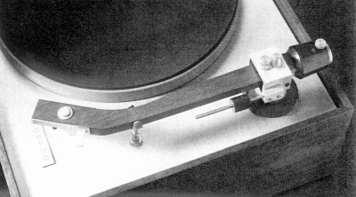
(MC型を扱っていた頃は、ウォールナット製のアームなどもあった。）近年はヘッドフォンが有名だが、古くからカートリッジが国内に紹介されていた。独自形式のMCカートリッジが有名だが早くに撤退し、その後は半導体型カートリッジを手がけ、やがて1970年代に大別するとMI型の一種であるFB(フラックスブリッジ)*型発電方式のカートリッジに移行している。当初はSHUREなどと同様に1万円を切る比較的リーズナブルな機種も存在した。つくりが非常に大ざっぱなこと、ロックを得意としたことは今日のヘッドフォンと共通する意見であった。
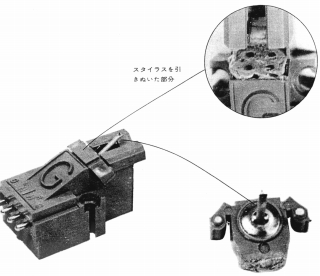
*FB型については、「振動系にマグネットやコイルを持たず、磁界中で振動するフラックスブリッジで磁束を変化させ、固定コイルに電流を惹起する」と説明されています。この説明はMI型の範疇であると判断し、当サイトではオルトフォンのVMS型と同様に、MI型として扱います。
GRADO (グラド) の製品を以下のように分類する。（この分類は個人的な意見で、メーカーの分類ではありません）
�T.カートリッジ
1990年に紹介されたヘッドフォンと比べれば、ずっと以前からカートリッジは紹介されていた。しかし他のブランドと比較すると空白期間が目立つ。また「グラード」と「グラード・シグネチュアー」の2つのブランドで紹介される時期もある。後者の場合は高級モデルのみである。なお1970年代のFCR+などの廉価製品と90年代末に登場したReferenceシリーズを除けば、1970年代から現行製品であるPrestigeシリーズまで、基本デザインを変えないのは、ヘッドフォンと同様であり、このブランドらしさを感じる。
�@1970年代の製品
1970年代初頭は、輸入が途切れていた時期のようだ。1975年頃より「カナザワトレイディング」が代理店となり扱いが再開した。1978年には「バブコ」扱いとなり、高額商品のみとなった。
(1)カナザワトレイディング扱いの製品（グラード名義）
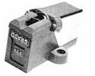
(FTR+1)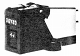
(F-1+)(2)バブコ扱いの製品（グラード・シグネチュアー名義）
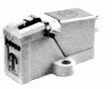
(Model �U 1万円台のモデルと10万円超のモデルのデザインが同水準なのはこのブランドのらしさだと思う)�A1980年代の製品
1984年にユニコエレクトロニックス�鰍ｪ代理店となり、再び扱われるようになった。1987〜88年にモデルの総入れ替えがあった。
(1)ユニコエレクトロニックス�活ｵいの製品（グラード名義）
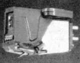
(M+)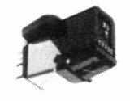
(XTE+1)(2)ユニコエレクトロニックス�活ｵいの製品（グラード・シグネチュアー名義）
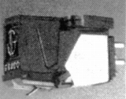
(Signature 8M)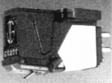
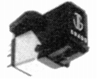
(Signature TLZ)Signature 8MZ Signature MCZ Signature TLZ
�B1990年代の製品
1992年のモデル入れ替え以降は、以前の「グラード名義」と「グラード・シグネチュアー名義」の併用は解消され、「グラード名義」に統一された。1996頃に代理店がナイコムとなる。
(1)ユニコエレクトロニックス�活ｵいの製品
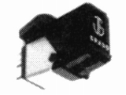
(Signature TLZ �U)Signature 8MZ�U Signature MCZ�U Signature TLZ�U
(2)ナイコム扱いの製品
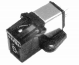
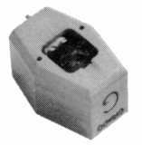
Reference Platinum Reference Signature Reference Master The Reference
�U.アーム
ユニコエレクトロニックス�鰍ｪ代理店の時代に、1度紹介された。
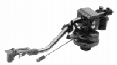
(Signature Lab. Standard)�V.その他
本国での状況は不明だが、管理人所有の資料では日本国内の製品はヘッドシェル1件のみ。ユニコエレクトロニックス�鰍ｪ代理店の時代のもの。
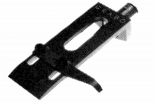
(J,Grado Signature)
■価格 3,800円
■重量 11g
■備考 アルミ削出し、2ピンロック式、無酸素銅リッツ線付き